Discovery
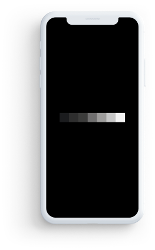
Introduction
I like to click abstract images, especially in black and white since they add mystery and drama to an image
While searching for an app that would speed up my editing process, I came across Hypocam.
With over 1M+ Downloads, Hypocam was one of the best apps for b&w photo editing.
But after using it for a while, I felt there were some problems with its Interface and Experience as a whole, so I took upon a challenge to improve its overall Experience.
I tweeted my entire process in a thread, take a look at my candid process here
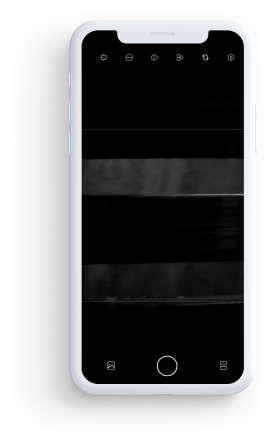
Process
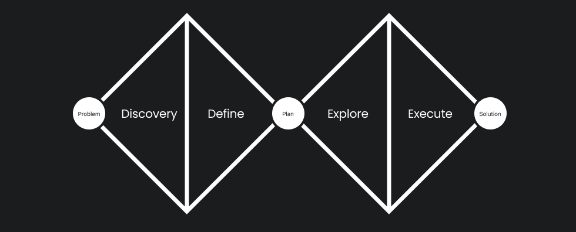
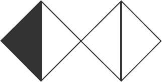
01
Building Empathy
The First step of redesign process was to understand the needs of people who were directly or indirectly affected by it.
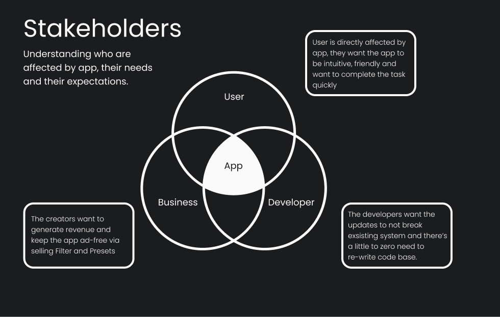
Deconstructing Existing Design
To understand the shortcoming of the current design, the First step was to understand what worked in Current design, what were various constraints and then improve on the design.
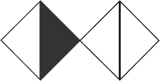
02
Define
Reviews
I wanted to know how existing users felt about the app, so I read through various reviews on the play store and the app store.
Based on these reviews I came at the following conclusion:
1. Overall User Interface of the app needs improvement.
2. Importing an Image in the current design is confusing.
3. Users are unexpectedly exiting the app.
4. User Experience needs improvement as there were many unnecessary taps.
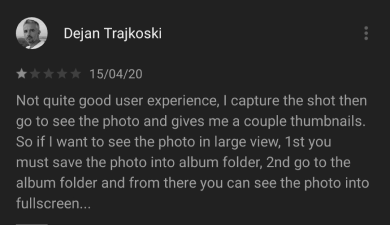
Usability Tests
Next step was to understand how the existing app was used by users.
The main goal of this test was to check how user interacted and understand the flow of using the app.
For this, I gave users 3 tasks to complete and drew conclusions based on the same.
1. Open the app, click a pic, go to a gallery, choose the clicked pic, change its brightness and change its hue.
2. Open the app, go to a gallery, import an image, then go to the camera interface.
3. Open the app, go to the camera interface, apply a filter, click a pic.
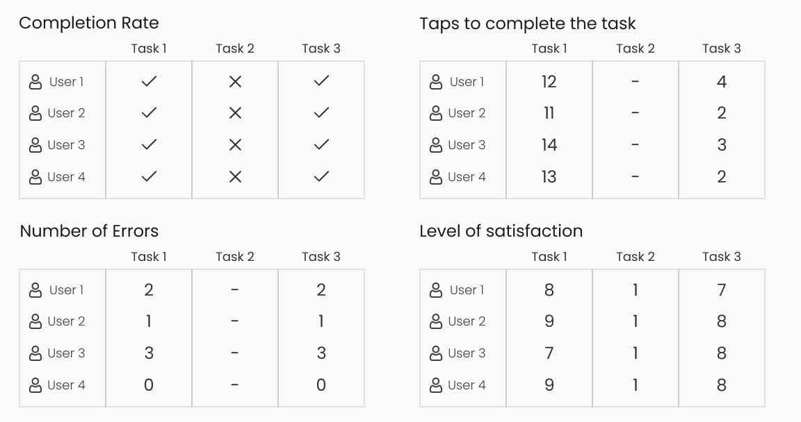
Understanding the User Needs
Based on Usability Tests, I wanted to understand a users journey while using the app. Their motivations and what they expect from the app
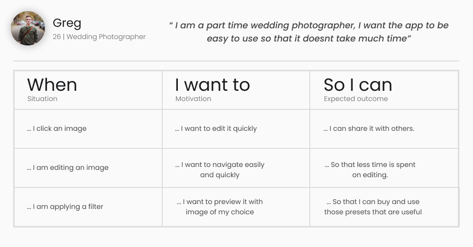
Competitor Analysis
Understanding Competitors, how are they achieved optimal experience, common patterns amongst them and finding inspiration.
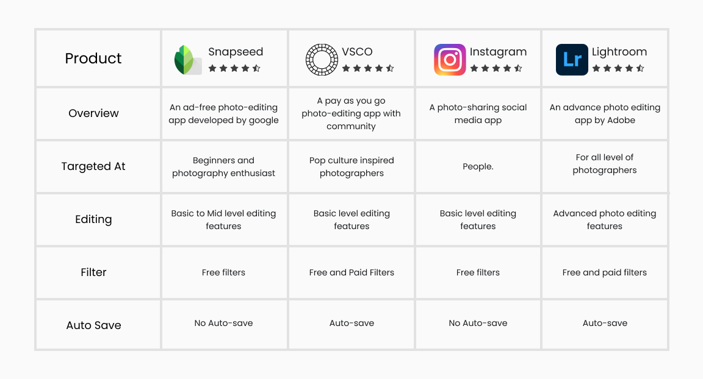
Key Problems
By observing how users interacted with current design and how the competitor apps work, I mapped out a few problems.
Possible Improvements
Based on how competitors work, I drew a rough estimate of possible improvements.
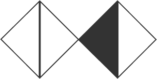
03
Explore
Design Thinking
Muscle Memory
Many photography apps that have camera features had similar layouts.
Example the camera interface was similar in many apps with subtle differences..
This made me realise that if the interface is similar, the task pattern will be subconcious, that in turn will help users to complete the task on a new app quickly.
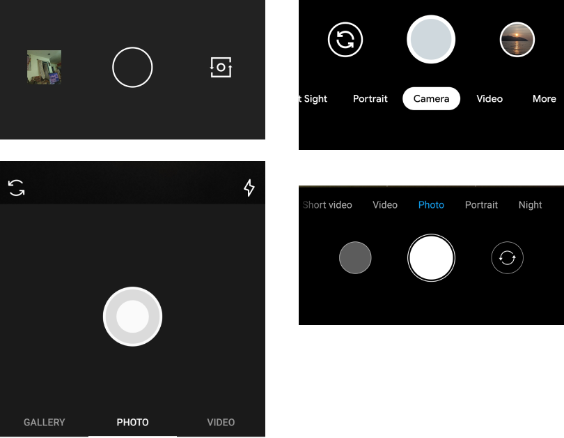
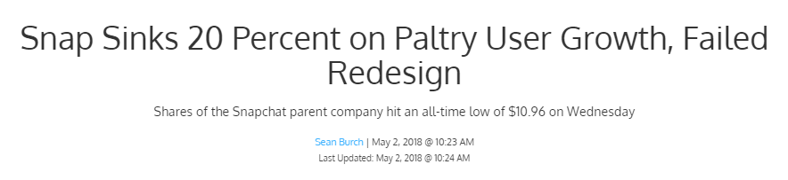
Constraints
User : Users hate change ! So it was necessary to keep design as close to original design as possible.
Businesss : Since the main revenue is generated via selling filters, the store must be given euqal priority.
Developer : the redesign shouldnt break exsisting code and new design should be made while keeping developer constrains in mind.
"Don't make me think"
In IOS and Android, an app can't directly work on images.
They need to be first imported into device workspace and then can be editied
But in the app, by showing gallery along with albums, the users got confused and thought that the images were already imprted so what's the need for another import
The main goal was to give users a smooth experience with minimal thinking.
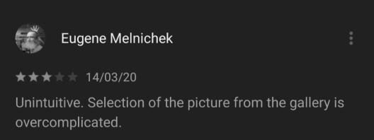
Wireframes
Based on Design thinking process, I did few iterations of wireframes. The wireframe were sketched keeping in mind that new design has to be similar to the old one with few necessary changes.
Prototype
Based on wireframes, I built a clickable prototype, this prototype went under series of iterations and tests.
Mid-Fi Prototype
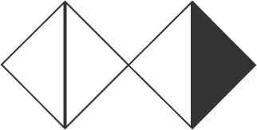
04
Execute
Validation
After going through series of iterations, I generated a usability report for new design
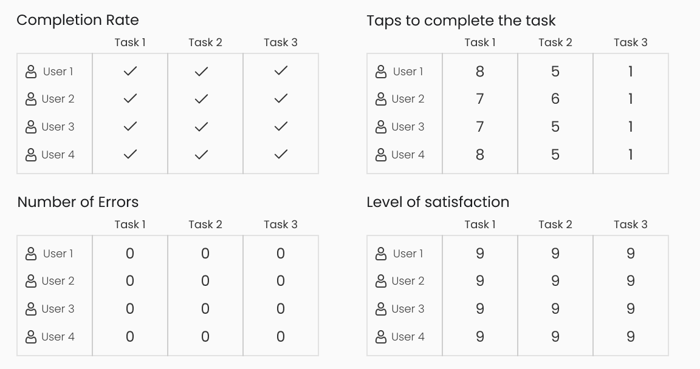Hi-Fidelity
Next I built the visual aspects of the app, the visuals were close to exsisting design.
Hi-Fi PrototypeDesign Changes
Camera Interface
The first change was made in camera interface.
After a series of interviews with photographers and casual users, I found out that users usually dont think about advance settings like contrast, hue etc.
But at the same time photographers cared about features like 3 X 3 grid.
The new design removes all unnecessary features and is reaplced with features that make photography experience better.
Gallery and Import
Second change was made in gallery and how user imported images.
After a series of interviews with photographers and casual users, I found out that users usually dont think about advance settings like contrast, hue etc.
But at the same time photographers cared about features like 3 X 3 grid.
The new design removes all unnecessary features and is reaplced with features that make photography experience better.
Editing Interface
Third Change were done in Editing Interface.
While watching how users were using the app, I saw that many got frustrated due to confusing navigation.
Since icons were unique to the app, I decided to add labels to exsisting icons.
This increased readability which inturn reduced number of taps and total time taken to complete a given task.
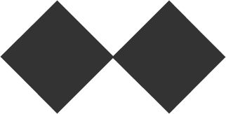
05
Lessons
Don't take anything for granted.
Extensive user research is important since it brings out actual needs of various stakeholders and possible clashes between their needs.
"Simplification is one of the most difficult things to do" - John Ive While working on this redesign, I wanted to simplify how user interacted with the app. This helped me gain knowledge about photography, how Android and iOS works and how to design effectively.
Let's Connect
Looking for someone to work on a case study ? Let's Chat !
Hiring a Designer with Developer experience ? Lets chat !
Connect !